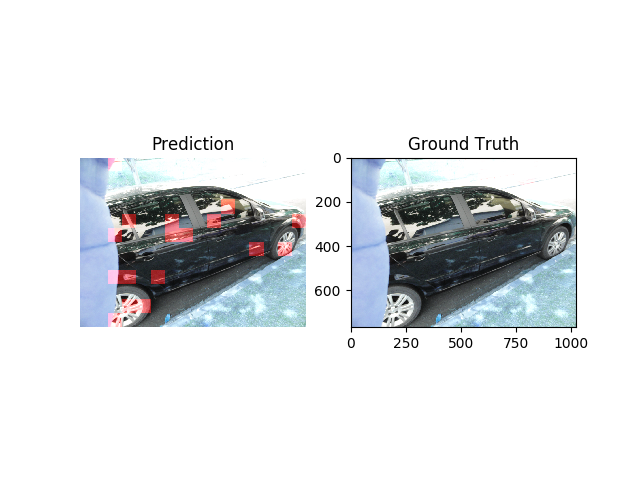

1. Yashas Method
Augment and Adapt: A Simple Approach to Image Tampering Detection
Yashas Annadani, C.V. Jawahar, ICPR
Link to paper
Convolution networks provide good results on detection of tampering but these network require large amount of training data.In this work, a simple method is proposed to address this problem by augmenting data using inpainting and compositing schemes.Domain Adaptation technique is used to reduce domain shift between augmented data and real datasetReults are shown on 2 image tamepring datasets.
(IEEE and CASIAv2)
Images are coverted to 64x64 patches. Using the mask provided by the dataset we determine is the patch was tampered or not. If the tampered region is more than 20% of the patch, it is considered tampered.
The model comprises of 5 conv layers followed by 3 fully connected layers(including output layer)
For detection on augmented and the target dataset, the conv layers and the first fully connected layer are shared. Other layers are forked and classification is provided separatly on both datasets.
Augmenting Data
-
1. For each image a patch is taken and is set to 0 using a mask.
2. We are using inpainting algorithms provided by opencv ( cv.INPAINT_TELEA.)
Semantic Inpainting: Very similiar to patch impainting but the mask is already provided to us. Coco dataset is used to get the semantic mask

-
Feathering: We feather an image over another image. Feathering is carried out by I = α · F + (1 − α) · B. Where F in the foreground image and the B is the background image.
Domian Adaptation
Cues present in one dataset are very different then the one provided by some another dataset. Hence the augmented and the synthetic data can be of different domains. To take in account of discrepancy, domain adaption is performed using Maximum Mean Discrepancy.MMD loss is defined as:
Let the features for image patches obtained from source domain data Xs be X̂s and the target domain Xt be X̂t. Here Φ(x̂) is a RKBF kernel used to convert the features to gaussian to calculate similiarity.
Losses
Adam Optimizer is used with weight decay at 0.0005
We use 3 losses. 2 Cross entropy losses for source and targer (L1&L2) and 1 MMD Loss defined above L. Parameter for each loss is λ1:0.3 λ2:0.7 λ3:0.001.
L = λ1*Lcs +λ2*Lct + λ3*LM
Results (Findit)
We carried out the experiments multiple number of times. On training the patches, we are able to reach a decent amout of accuracy. But during testing we have there are too many false positives.
Results (CASIA)
Accuracy Chart(Patch Level)

Accuracy Chart(Patch Level)

Confusion Matrix (Patch Level)

Accuracy: 0.875
Precision: 0.8618
Recall: 0.6598
F1 score: 0.7473
Confusion Matrix

Accuracy: 0.75135
Precision: 0.939
Recall: 0.736
F1 score: 0.831
Results (IEEE)
Accuracy Chart(Patch Level)
Accuracy Chart(Image Level)
Confusion Matrix (Patch Level)
Results are on using augmentation and pretraining on augmented data
Confusion Matrix (Patch Level)

Accuracy: 0.864
Precision: 0.8618
Recall: 0.6598
F1 score: 0.7473
Confusion Matrix

Accuracy: 0.8742
Precision: 0.9057
Recall: 0.8397
F1 score: 0.862
Visual Results
-
-


Improved dct coefficient analysis for forgery localization in jpeg images
T. Bianchi, A. D. Rosa, and A. Piva, ICASSP, 2011
Link to paper
The method tries to detect forgery double jpeg artifacts in an image. It is used to detect Jpeg images that have and were compressed twice with 2 different quantizations , hence this method is used to find CPO(copy paste from other document) and imitation based on forgery.
What are double jpeg artifacts ?
1. Let us take an image I, if D00 was first lossy compression with q1 as quantization for the first compression.
2. After compression if we tamper it and compress it again with a D01 as your second loss compression with quantization as q2.
Hence we can write a 8x8 double quantized region as:
Upon plotting an histogram of both single quantized and double quantized image. We noitice a periodic pattern. This is helpful for estimating the first quantization.
It has been shown that the difference significantly varies between the quantization using q1 and q2 vs quantization using only q2. (See figure).
Work Flow
1. Let Q1 and Q2 quantization steps used in the first and second compression.
2. To estimate Q1, minimize the difference between 2 histograms of DCT coefficients, one created from the image h(x) and one predicted by using Q1 and Q2. Lets call it p(x).
3. Double jpeg artifacts cause a periodic shift in the DCT coefficient of the doubled quantized region with a period Q1/gcd(Q1, Q2). Let the periodic function be n(x).
4. Estimate the histogram as a mixture model of single compressed region (H1) and double compressed regions (H0). Hence p(x; Q1 , α) = α · n(x; Q1 ) · h̃(x | H1) + (1 − α) · h̃(x | H1)
5. To estimate Q1, minimize the difference between 2 histogram of DCT coefficients.
6. h̃(x|H1) is histogram calculated by using only Q2 , h̃(x|H0) is calculated as h̃(x|H0 ) = n(x, Q1) · h̃(x|H1)
7. Estimation of Q1 using L2 loss : Q̂1 = argmin sum([h(x) − p(x; Q1 , α )])2
8. After estimating Q1 the probability of a 8x8 block being double compressed can be written as "p". "p" is given by joint distribution over all coefficients
Splicebuster
D. Cozzolino, G. Poggi and L. Verdoliva, 2015 IEEE International Workshop on Information Forensics and Security (WIFS), 2015
Link to paper
Feature-based algorithm to detect image splicings without any prior information. Splicing and host images are assumed to be characterized by different parameters.
Work flow
1. For splice detection, the high level noise is more important than the image content.
2. Linear high pass filters is used to create “residue”.
3. Co-occurrence matrix is calculated for residue. This matrix is used as features for the gaussian mixture model/SVM.
4. This co-occurrence matrix is then used as a feature for GMM.
5. Using expectation-maximization we can cluster pixels into 2 classes, forged or background.
Results (CMFD + Splicebuster + Fusion)
Findit
Accuracy: 0.982
Precision: 0.972
Recall: 0.938
F1 score: 0.954
CASIA
Accuracy: 0.79
Precision: 0.939
Recall: 0.548
F1 score: 0.67
IEEE
Accuracy: 0.9133
Precision: 0.9057
Recall: 0.842
F1 score: 0.873
Visual Results
-
-
We are using 451 fake image and only 50 pristine image. Other wise we get stuck due to class imbalance